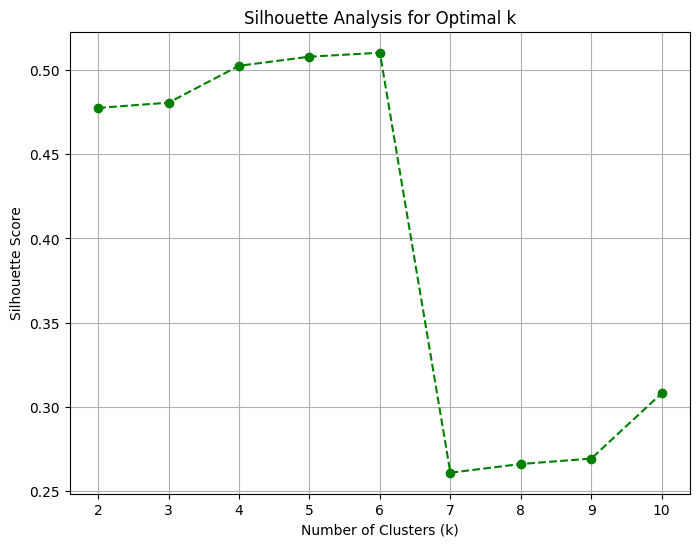
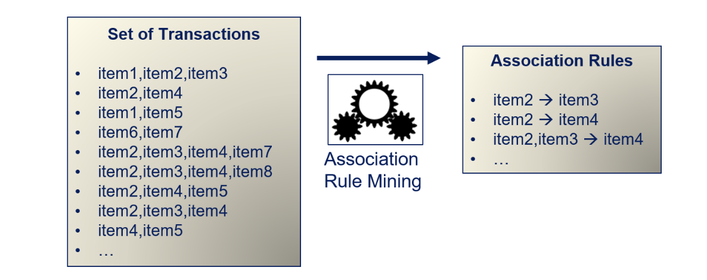
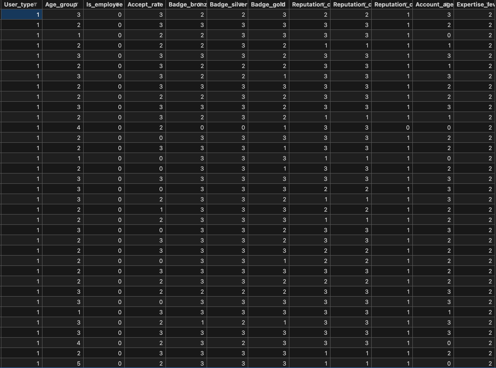

Welcome to Stack Overflow User Engagement Analysis
Stack Overflow has been a fundamental platform for programmers worldwide, fostering a knowledge-sharing ecosystem that helps developers troubleshoot, learn, and collaborate. However, with the rise of AI-driven tools like ChatGPT, the way users engage with Stack Overflow is evolving. This project leverages Machine Learning (ML) to explore user behavior trends, engagement patterns, and the impact of AI on community-driven learning.
About This Project
The goal of this project is to analyze Stack Overflow data using data science and machine learning models to uncover trends in user participation, reputation growth, and question-answer interactions.
Over the course of this study, various ML models will be applied to gain insights into what drives user engagement, how AI influences participation, and which factors impact long-term user retention.
Why This Study Matters
Stack Overflow has traditionally thrived on human-generated content, where developers contribute questions and answers to help others. However, AI-generated solutions are changing user behavior, leading to fewer questions being posted, altered response patterns, and a potential decline in community engagement. This project aims to:
- Understand how user engagement has shifted over time.
- Analyze how AI tools impact the frequency and quality of interactions.
- Predict user retention based on engagement trends.
- Identify which topics and tags are most affected by AI-generated responses.
- Explore ways to enhance Stack Overflow's long-term sustainability.
What to Expect
This study will involve implementing multiple machine learning models to analyze the Stack Overflow dataset. The findings will help answer key questions such as:
- Which user types (experienced vs. new users) contribute the most?
- What factors drive high-reputation growth?
- Which tags and topics receive the most engagement?
- How do user activity levels change over time?
- Are there patterns in unanswered or low-quality questions?
- How do AI-generated responses affect user behavior?
As the project progresses, various machine learning techniques such as Association Rule Mining (ARM), Principal Component Analysis (PCA), and predictive modeling will be applied to extract meaningful insights.
Project Scope
This project will evolve over time, implementing multiple machine learning models to analyze user interactions on Stack Overflow. The findings will be shared and updated progressively.
The goal is to help data scientists, developers, and platform administrators better understand user engagement trends and predict the future of knowledge-sharing platforms in an AI-driven world.
Stack Overflow: A Pillar of the Developer Community
Stack Overflow is the world's largest and most prominent platform designed for developers and programmers to learn, share knowledge, and collaborate. Established in 2008 by Jeff Atwood and Joel Spolsky, the platform was created to address critical challenges faced by developers seeking accurate and timely programming solutions. Operating as a question-and-answer forum, Stack Overflow facilitates peer-reviewed responses to technical queries across a broad spectrum of programming languages, frameworks, and tools. By fostering high-quality knowledge exchange, the platform builds a credibility system where users earn reputation points and achievement-based badges for their contributions, enhancing community trust and engagement.
With over 22 million questions and hundreds of millions of monthly users, Stack Overflow has become a cornerstone of the global software development ecosystem. The platform empowers developers to solve complex problems efficiently while supporting continuous learning and technical growth. Many professionals rely on Stack Overflow as their first point of reference when debugging issues, exploring new technologies, or improving their skills. Its mission to "help developers write the script of the future" underscores its significance in driving technological innovation and progress in the industry.
The Impact of AI Tools on Stack Overflow
The rapid rise of AI tools, particularly generative models such as ChatGPT, has introduced significant challenges to Stack Overflow's operational model. These AI tools provide instant, conversational responses to programming-related questions, disrupting traditional forums by reducing the need for users to post questions and await peer-reviewed answers. Consequently, the platform has experienced a noticeable decline in user activity and engagement. Research indicates a 16% reduction in weekly posts soon after the release of ChatGPT, suggesting that developers are increasingly turning to AI for quick solutions rather than contributing to Stack Overflow's knowledge base.
This decline has directly affected the core pillars of the platform: user-generated content, community discussions, and expert contributions. Many experienced users who previously provided high-quality answers have reduced their activity on the platform, resulting in a diminished pool of expertise. This impacts both the diversity and depth of available solutions, ultimately threatening the collaborative knowledge-sharing ecosystem upon which Stack Overflow thrives.
Additionally, the increased presence of AI-generated responses on Stack Overflow itself has presented further challenges. Moderation teams have reported a surge in low-quality answers generated by AI tools. While these responses may appear accurate on the surface, they often lack context or detailed reasoning, placing a greater burden on moderators to filter and maintain the platform's content quality.
According to Stack Overflow's 2024 Developer Survey, 76% of developers are actively using or considering AI tools to aid their programming tasks. Despite the growing adoption of AI, 43% of respondents expressed concerns regarding the reliability of AI-generated answers, particularly in complex or nuanced scenarios. Nonetheless, developers continue to favor AI for its speed and convenience, further reducing reliance on community-driven solutions.
Project Motivation
The motivation behind this project is to analyze Stack Overflow's user data and activity patterns using machine learning techniques. By identifying key trends, including shifts in user engagement and the influence of AI tools, the project aims to uncover factors that impact the platform's long-term sustainability. Understanding these patterns can provide actionable insights to help Stack Overflow strategize for future growth, improve user retention, and maintain its position as a vital resource for the global developer community.
Objectives
The objective of this project is to derive insights into user engagement and activity trends on Stack Overflow by leveraging data analysis and machine learning techniques. The study focuses on exploring and addressing key research questions, including patterns of user participation, reputation dynamics, content interaction, and the influence of external factors like AI tools. These insights aim to support the development of strategies to enhance user retention, improve content quality, and sustain long-term platform growth.
- 1. Which user types (e.g., experienced, new, or moderators) are most active on Stack Overflow?
- 2. What factors influence user reputation growth over time?
- 3. Which tags or topics lead to the highest engagement (views, upvotes, answers)?
- 4. How does user activity (e.g., number of posts, last access date) change over time?
- 5. What types of users are more likely to leave the platform (low engagement, declining activity, etc.)?
- 6. Which types of questions (based on topic, length, or complexity) are most likely to receive answers?
- 7. How does the time of posting (day of the week, time of day) impact the likelihood of receiving quick responses?
- 8. What are the common characteristics of highly upvoted or highly answered questions?
- 9. How do AI tools influence the frequency and type of questions being asked?
- 10. Which tags or topics have seen a decline in user engagement due to the rise of AI tools?
- 11. What user behaviors are predictive of long-term retention and active participation on the platform?
- 12. Which regions or locations (if location data is available) have the highest or lowest participation rates on Stack Overflow?
- 13. What factors (e.g., reputation changes, badges earned) predict whether a user will become a top contributor?
- 14. How can Stack Overflow tailor its platform to encourage users to stay engaged despite competition from AI tools?
- 15. How might user activity and engagement trends evolve over the next few years given the current usage patterns and the increasing adoption of AI-based coding tools?
Data Collection
Effective data collection is crucial in any data-driven project, particularly when using machine learning to analyze trends and make predictions. Reliable and high-quality data enables accurate model training, which, in turn, provides better insights and predictions. In this project, user data from Stack Overflow was collected to analyze user engagement, activity trends, and platform growth patterns. Since the platform is large and continuously evolving, accessing up-to-date data through manual extraction would be inefficient and error-prone. Instead, APIs (Application Programming Interfaces) provide a systematic way to collect structured data in real-time.
APIs allow automated access to vast datasets while ensuring that data retrieval follows the platform's usage policies and structure. By using Stack Exchange's API, this project leveraged a reliable method to retrieve relevant user information, including reputation, location, activity dates, and earned badges. This API offers endpoints that provide data in a machine-readable JSON format, making it ideal for large-scale data collection and processing.
This automated approach ensures that the data collection process is efficient, scalable, and capable of handling large volumes of user data from Stack Overflow. By using APIs, the project can be easily updated with fresh data in the future, enabling continuous analysis and improvement of machine learning models.
The script used for data collection follows a structured approach:
- API Request and Pagination: The script builds API requests to fetch user data in batches of 100 profiles per request. It supports pagination to iterate through multiple pages of data, starting from page 1 and continuing until all available data is retrieved.
- Data Saving: The response data from each API call is saved both as a JSON file and a CSV file for analysis. The JSON file stores the complete API response, preserving all details, while the CSV file organizes key fields in tabular format.
- Dynamic Extraction: The script dynamically extracts important fields, including user ID, display name, reputation, location, profile image, and badge counts. It also compiles information about collectives (groups or communities) the users may belong to.
- Folder and File Organization: To keep the collected data organized, the script creates separate folders for JSON and CSV files. Each file is named using a timestamp and page number, ensuring easy identification and retrieval.
- Rate Limiting: To prevent exceeding the API's request limits, the script includes a short delay between requests. This helps maintain compliance with API usage guidelines while avoiding service interruptions.
- Error Handling: The script verifies the success of each API call by checking the HTTP status code. If a request fails, an error message is displayed, and the data collection loop terminates gracefully. The loop also ends when there are no more pages of data to fetch.

Stack Exchange API Documentation - Link to API details
Python Script for Data Extraction - Data Extraction Script
Data Preparation
After extracting the data from the Stack Exchange API, the next crucial step was data preparation. Since the API returned multiple CSV files, each containing a batch of user records, a Python script was developed to merge these individual files into a single dataset. The script scans a directory containing the CSV files, reads each file into a Pandas DataFrame, and then concatenates all DataFrames into one comprehensive dataset. This merged file, containing approximately 100,000 records, provides a centralized and organized dataset that will be used for further analysis and machine learning model training.
This step ensures that all relevant data is consolidated, allowing for efficient analysis without the need to repeatedly access or process multiple smaller files. Proper data preparation is essential to eliminate redundancy, handle errors, and structure data in a way that optimizes subsequent data exploration and model development.
Python Script for Data Preparation - Data Preparation Script
Data Cleaning
Importance of Data Cleaning
Data cleaning is an essential step in preparing data for analysis and model training. Real-world data often contains missing values, inconsistencies, and errors, which can lead to unreliable and inaccurate insights. Unclean data negatively impacts the performance of machine learning models, leading to bias and misleading results. By thoroughly cleaning the data, we ensure its quality and reliability, allowing models to make accurate predictions. Effective data cleaning helps to minimize errors, improves model performance, and provides meaningful insights during data analysis.
The data cleaning process began with analyzing the dataset structure, including columns, data types, and sample data points. Both categorical and numerical fields were reviewed to identify data points requiring further cleaning. Missing values were assessed by calculating the percentage of missing entries per column. Columns with excessively high missing values, such as collective_names, were dropped due to limited analytical value. Columns with moderate missing data, such as website_url and accept_rate, were handled appropriately. For numerical columns like accept_rate, missing values were filled with the median. Missing values in categorical columns like display_name were replaced with a unique string pattern, username_{user_id}. Duplicate records were identified and removed to ensure data integrity. Derived features were added to enhance analytical capabilities, including account_age_years, calculated from the creation_date column to analyze user engagement trends over time. Data type conversions were performed to standardize formats. Date fields such as creation_date, last_modified_date, and last_access_date stored in epoch format were converted to datetime format for time-based analysis. These steps resulted in a clean, structured dataset, free of missing values, duplicates, and data type inconsistencies. The refined dataset is prepared for exploratory analysis and machine learning model training.
Data Attributes from Raw Data

Merged Raw Data

Cleaned Data

Python Code for Data Cleaning - Data Cleaning Code
Raw Data - Link to Raw Data
Cleaned Data - Lint to Cleaned Data
Data Visualization
Visualization 1: Total Badge Count by Type
- - Distribution Shape: The badge distribution shows that bronze badges are the most common, followed by silver, while gold badges are comparatively rare.
- - Central Tendency: The count difference between badge types suggests that users are more frequently awarded lower-tier badges.
- - Spread: The spread is significant between the badge types, with a substantial gap between bronze and gold.
- - Outliers: There are no evident outliers since the count of each badge type follows the expected hierarchical structure of difficulty and rarity.
- - Overall Interpretation: The visualization indicates that while users are highly rewarded with bronze and silver badges, gold badges remain exclusive to top contributors or achievements.
Visualization 2: Reputation Distribution

- - Distribution Shape: The reputation distribution is heavily right-skewed, with most users having low reputation scores.
- - Central Tendency: The majority of users have a reputation close to zero, indicating a high concentration near the lower end.
- - Spread: The range of reputation values extends to over 1.4 million, showing a wide disparity between users with low and high reputation.
- - Outliers: A few users have extremely high reputations, representing outliers with significant contributions or long-standing presence.
- - Overall Interpretation: The reputation distribution highlights that while a small subset of users is highly reputed, the majority are new or infrequent contributors to the platform.
Visualization 3: Account Age vs Reputation

- - Visualization: A scatterplot representing the relationship between account age (in years) and user reputation, with points plotted in a light red color.
- - Insight: The plot shows a positive correlation, where older accounts tend to have higher reputations. However, many users with older accounts still maintain low reputation scores, indicating that active contribution over time is necessary to build reputation, rather than account longevity alone.
Visualization 4: Reputation Change Over the Year

- - Distribution Shape: The annual reputation change distribution is highly skewed, with most users showing minimal to zero change in reputation.
- - Central Tendency: The majority of reputation changes are centered near zero, indicating little or no yearly variation for most users.
- - Spread: The reputation change values span a broad range, with a few users experiencing significant positive or negative changes.
- - Outliers: A small number of users have large positive reputation increases, representing exceptional activity or contributions within a year.
- - Overall Interpretation: This distribution suggests that while most users do not experience major changes in reputation annually, a select few have substantial fluctuations driven by their activity levels on the platform.
Visualization 5: Badge Counts by User
- - Distribution Shape: The distribution of total badges per user is highly skewed, with the majority of users having very few badges.
- - Central Tendency: Most users have a total badge count close to zero, indicating minimal recognition or contributions.
- - Spread: The badge count ranges from 0 to over 10,000, demonstrating wide variability in user achievements on the platform.
- - Outliers: A few users have extremely high badge counts, representing highly active and accomplished contributors.
- - Overall Interpretation: The badge distribution indicates that while a select group of users earn significant recognition through badges, the vast majority engage less frequently or with fewer impactful contributions.
Visualization 6: User Count by Account Age Range

- - Distribution Shape: The distribution shows a peak in user count for accounts aged between 12 to 15 years, with a steady decrease in older and newer accounts.
- - Central Tendency: The majority of users fall within the 10 to 18-year age groups, suggesting a high concentration of users with long-standing accounts.
- - Spread: The user base is unevenly spread, with fewer users in the less than 1-year and greater than 20-year account age ranges.
- - Outliers: The newest accounts (less than 1 year old) and the oldest accounts (over 20 years old) have minimal user representation.
- - Overall Interpretation: The platform maintains a strong core of users with significant account longevity, reflecting long-term engagement and retention trends.
Visualization 7: Distribution of Accept Rate

- - Distribution Shape: The accept rate distribution shows a right-skewed pattern, with a peak around the 80% mark.
- - Central Tendency: A significant portion of users have an accept rate between 70% and 90%, indicating a strong tendency toward high acceptance rates.
- - Spread: Accept rates vary widely, ranging from 0% to 100%, though lower acceptance rates are much less frequent.
- - Outliers: Very low accept rates near 0% have minimal representation in the dataset.
- - Overall Interpretation: The graph highlights that the majority of users maintain a high accept rate, suggesting consistent user engagement with answers received on the platform.
Visualization 8: Reputation vs Accept Rate
- - Visualization: A scatterplot showing the relationship between 'Reputation' and 'Accept Rate', with data points distributed across varying values of both variables.
- - Insight: The plot reveals a positive trend where higher accept rates tend to be associated with higher reputations. However, there is a significant concentration of users with low reputation across all accept rate levels, indicating that reputation growth might require consistent high acceptance over time or other factors.
Visualization 9: Box Plot of Reputation by User Type

- - Visualization: A box plot showing the distribution of user reputation categorized by user types: moderator, registered, and unregistered.
- - Insight: Registered users show a wide spread in reputation with many outliers, including extremely high reputations. Moderators have a relatively consistent reputation range with fewer outliers, while unregistered users have minimal reputation variations.
Visualization 10: Most Recent User Access Dates

- - Visualization: A line plot illustrating the number of users accessing the platform over time in January 2025.
- - Insight: There is a steady, minimal user access trend until late January, followed by a sharp spike around January 29th, potentially due to a major event or system update, before the user count declines quickly after.
Python Code for Data Visualization - Data Visualization Code
Github Repository - Link to github code
Overview
Principal Component Analysis (PCA)
Principal Component Analysis (PCA) is a widely used technique for dimensionality reduction in data analysis and machine learning. It simplifies high-dimensional datasets by transforming them into a smaller set of meaningful features while preserving most of the original information. PCA works by identifying the directions, called principal components, along which the data varies the most. By projecting the dataset onto these new axes, PCA reduces redundancy, improves computational efficiency, and makes pattern analysis easier.
PCA is particularly beneficial when datasets contain correlated features that add complexity without providing additional insights. By converting the original variables into a smaller number of uncorrelated principal components, PCA ensures that only the most important patterns are retained. This technique is widely applied in image processing, finance, genetics, and recommendation systems, where high-dimensional data can be challenging to interpret effectively.
Principal Components
Principal components are the new features created by PCA that capture the maximum variance in the dataset.
- First Principal Component (PC1): Represents the direction with the most variation, retaining the highest amount of information from the original data.
- Second Principal Component (PC2): Captures the second-highest variance while remaining uncorrelated with the first.
- Subsequent Components: Each additional component captures progressively less variance, ensuring that only the most essential structure of the dataset is retained.
By selecting only the top principal components, PCA reduces the number of dimensions while preserving essential patterns, making analysis more efficient and interpretable.
Variance Explained by Principal Components
To determine how many components are needed, variance explained plots are used:
Scree Plot (Variance Explained per Component)

The scree plot shows how much variance each principal component captures. The first few components retain most of the variance, while additional components contribute less.
Cumulative Variance Plot

This graph indicates the cumulative variance retained as more components are added. In this project, the first X principal components capture at least 95% of the variance, making them sufficient for further analysis.
Why PCA?
In this project, PCA is applied to analyze user engagement patterns on Stack Overflow by reducing the dataset’s dimensionality while preserving crucial information. The dataset contains user reputation, badge counts, accept rates, and activity levels, which are often highly correlated. Direct analysis of such high-dimensional data is both computationally expensive and difficult to visualize.
By applying PCA, the dataset is transformed into a smaller set of principal components that retain the highest variance, helping to remove redundancy and improve efficiency. This allows for better interpretation of key factors driving user engagement while filtering out less significant features.
How PCA Improves This Project
The main goal of PCA in this project is to:
- Enhance Data Visualization: Reducing dimensions makes user engagement patterns easier to visualize.
- Improve Model Performance: Selecting the most informative components helps refine predictions.
- Optimize Feature Selection: Identifies the most relevant attributes without unnecessary complexity.
- Increase Computational Efficiency: Reducing data dimensions speeds up analysis and reduces noise.
Data Preprocessing
Preprocessing is a crucial step before applying Principal Component Analysis (PCA) to ensure that the dataset is properly formatted for dimensionality reduction. PCA works by identifying the principal components that capture the most variance in the data, but if the dataset is not cleaned and standardized, the results can be misleading. Features with larger numerical values may dominate the analysis, while missing or inconsistent data can introduce errors. To ensure that PCA provides meaningful and reliable insights, several preprocessing steps are performed, including removing non-numeric data, handling missing values, and standardizing the dataset.
Since PCA relies on variance and covariance calculations, it can only process numerical data. Therefore, any categorical or text-based columns are removed to ensure that PCA operates correctly. Additionally, PCA is sensitive to differences in scale, meaning that features with varying magnitudes—such as "reputation" in thousands and "badge counts" in single digits—could disproportionately influence the principal components. To prevent this, standardization is applied using StandardScaler from sklearn.preprocessing, which transforms all features to have a mean of 0 and standard deviation of 1, ensuring equal contribution to the PCA transformation.
Another critical preprocessing step is handling missing values, as incomplete data can distort variance calculations and affect the reliability of principal components. The dataset is checked for missing values using isnull().sum(), and missing data is either removed or imputed using statistical techniques like the mean or median to maintain consistency. Once the dataset is fully cleaned and standardized, it is converted back into a structured pandas DataFrame, making it easier to interpret and apply PCA effectively. These preprocessing steps ensure that PCA successfully reduces dimensionality while retaining the most essential information, leading to more efficient and insightful data analysis.
Raw Data
Cleaned Data for PCA
Code for preproccesing - PCA Data Preproccesing Code
Link to raw dataset - Raw Dataset
Link to proccessed dataset - Processed Dataset
Implementation
Principal Component Analysis (PCA) was applied to the dataset to reduce dimensionality while retaining the most important information. The dataset initially contained multiple numerical features, making it complex to visualize and analyze directly. PCA was performed twice—once with two principal components (2D PCA) and once with three principal components (3D PCA)—to compare how much variance is preserved in each transformation.
PCA with 2 Components
- - The data was projected onto two principal components to visualize it in 2D space.
- - The variance retained in this transformation was 69.17%, meaning that the two components capture most of the important structure in the dataset but still leave out about 30.83% of the information.
- - The 2D scatter plot shows a dense clustering of points, with some outliers indicating potential variations or distinct patterns in the data.
PCA with 3 Components
- - The data was then projected onto three principal components for a 3D representation.
- - This transformation retained 78.60% of the variance, suggesting that adding one more component helps capture an additional 9.43% of the dataset’s variability.
- - The 3D scatter plot provides a clearer separation of data points, indicating that higher dimensions may help in retaining more meaningful patterns.
Visualization for PCA with 2 Components
Observations
- Variance Retention: Captures 69.17% of the variance, losing 30.83% of the dataset’s information.
- Data Clustering: Points are densely packed, indicating that PC1 and PC2 capture major patterns.
- Outliers: A few distant points suggest potential anomalies or distinct patterns.
- Data Spread: PC1 explains the most variance, while PC2 adds minimal new information.
- Limitation: Loss of variance may oversimplify data relationships.
Visualization for PCA with 3 Components

Observations
- Variance Retention: Preserves 78.60% of variance, capturing 9.43% more information than 2D PCA.
- Better Separation: Points are more evenly spread, meaning PC3 contributes valuable structural details.
- Outliers: Still present, but better distributed, requiring further analysis.
- Data Depth: PC3 reduces variance loss, making patterns more distinguishable.
- Advantage: Improved representation over 2D, but higher dimensions may still be needed for 95% variance retention.
Visualization for Cumulative variance retained in 2D PCA
Observations
- First Component Dominance: The first principal component captures around 45-50% of the variance.
- Cumulative Variance: Adding the second component increases total variance retention to 69.17%, reducing information loss.
- Diminishing Returns: The second component contributes less variance than the first, indicating reduced impact of additional components.
- Information Loss: 30.83% variance is lost, suggesting that higher dimensions may be needed for better data representation.
Visualization for Cumulative variance retained in 3D PCA

Observations
- First Component Impact: The first principal component captures around 40-45% of the variance.
- Increased Retention: Adding the second component raises cumulative variance to 69.17%, similar to 2D PCA.
- Third Component Benefit: The third principal component improves variance retention to 78.60%, adding 9.43% more information over 2D PCA.
- Reduced Information Loss: Only 21.40% variance is lost, making 3D PCA a better representation compared to 2D PCA.
Optimal Number of Components for 95% Variance Retention
Observations
To balance dimensionality reduction and information retention, PCA was used to determine how many components are needed to preserve at least 95% of the dataset's variance. The analysis found that 6 principal components achieve this goal.
The cumulative variance plot visually represents this:
- The red dashed line marks the 95% variance threshold.
- The blue vertical line shows that 6 components are enough to retain most of the data’s structure.
Using 6 components simplifies the dataset while ensuring minimal information loss, making it efficient for further analysis.
Top three Eigen values

Eigenvalues represent the amount of variance captured by each principal component. The higher the eigenvalue, the more important the component is in explaining the dataset's variability.
For this dataset, the top three eigenvalues are:
- PC1: 5.75 (captures the highest variance)
- PC2: 3.94 (adds significant variance)
- PC3: 1.32 (contributes less but still meaningful)
The bar chart visualization highlights the difference in variance captured by each component. PC1 dominates, followed by PC2, while PC3 captures much less variance. This analysis helps in understanding how much information each component retains and guides the selection of an optimal number of dimensions for data representation.
Link to Model Implementation - Model Implementation
Results and Conclusion
Results
The Principal Component Analysis (PCA) was applied to simplify the dataset while preserving its core information. The analysis provided key insights into the balance between dimensionality reduction and information retention.
Variance Retention in 2D PCA
- Two principal components retained 69.17% of the total variance.
- This allowed for simplified visualization, but resulted in a 30.83% information loss, meaning some patterns were not fully captured.
- The 2D PCA scatter plot highlights distinct clusters, though some overlap and outliers indicate missing variability.
Variance Retention in 3D PCA
- Using three principal components increased variance retention to 78.60%, improving information capture.
- This represents a 9.43% gain compared to 2D PCA, making the data structure more distinct.
- The 3D PCA scatter plot provides better separation of data points, revealing clearer patterns.
- However, 21.40% of variance remains unaccounted, suggesting the need for more dimensions to fully represent the dataset.
Optimal Number of Components
- Cumulative variance analysis shows that at least six principal components are required to retain 95% of the total variance.
- This ensures the dataset’s key structure and relationships are preserved while reducing complexity.
- Using six components provides an optimal balance between computational efficiency and data integrity.
Eigenvalue Analysis
- Eigenvalues represent the importance of each principal component in capturing variance:
- PC1 (5.75) captures the highest variance, making it the most influential.
- PC2 (3.94) significantly improves representation.
- PC3 (1.32) holds meaningful information but contributes less.
- The eigenvalue bar chart visually confirms that PC1 dominates, followed by PC2 and PC3, reinforcing the importance of the first few components.
Conclusion
PCA effectively reduced the dataset's dimensionality while preserving its most significant features. The analysis demonstrated that:
- 2-component PCA is useful for visualization but causes substantial information loss.
- 3-component PCA provides better structure while still losing 21.40% of variance.
- 6 principal components retain at least 95% of the dataset's information, making them ideal for analysis.
- Eigenvalue analysis confirms that the first few components capture most of the dataset's meaningful structure.
By applying PCA, this project successfully removed redundancy while maintaining interpretability. The findings provide valuable insights into user engagement patterns on Stack Overflow, helping to identify key features that drive activity on the platform.
Link to complete code - Complete Implementation
Github Repository - Link to github code
Overview
Clustering
Clustering is an unsupervised machine learning technique used to group similar data points based on patterns and relationships. Unlike classification, clustering does not rely on predefined labels; instead, it identifies natural structures within the dataset. It is widely used in applications such as customer segmentation, anomaly detection, and pattern recognition. The three main types of clustering algorithms—K-Means (partition-based), Hierarchical Clustering (tree-based), and DBSCAN (density-based)—each have unique strengths and weaknesses depending on the dataset's characteristics. Clustering helps uncover hidden insights, simplifies data for further analysis, and enhances decision-making in various domains, from marketing to bioinformatics.
Role of Distance Metrics in Clustering
Distance metrics play a crucial role in clustering algorithms as they determine how similarity between data points is measured. The choice of distance metric impacts how clusters are formed and how well-separated they are. Commonly used distance metrics include:
- Euclidean Distance: Measures the straight-line distance between two points in a multi-dimensional space. It is widely used in K-Means clustering but struggles with high-dimensional data.
- Manhattan Distance: Measures the distance between two points by summing the absolute differences of their coordinates. It is useful for grid-like data structures.
- Cosine Similarity: Measures the angle between two vectors rather than the actual distance. It is commonly used in text mining and hierarchical clustering.
- Minkowski Distance: A generalization of Euclidean and Manhattan distances, allowing flexibility in measuring distances in different ways.
Each clustering algorithm may perform differently based on the distance metric chosen. K-Means primarily relies on Euclidean distance, while hierarchical clustering can use various metrics such as cosine similarity or correlation distance. DBSCAN, on the other hand, uses epsilon-based (density) distance to group points effectively.
Clustering Techniques
K-Means Clustering
K-Means is a partition-based clustering algorithm that divides data into k groups by minimizing the variance within each cluster. It begins by randomly selecting k centroids, then assigns each data point to the closest centroid based on Euclidean distance. The centroids are iteratively updated until cluster assignments stabilize. K-Means is computationally efficient and works well for large datasets with well-defined, spherical clusters. However, it requires k to be predefined, making it less flexible when the number of natural clusters is unknown. It is also sensitive to outliers, as they can skew the centroid locations and affect clustering accuracy.
Hierarchical clustering
Hierarchical clustering builds a hierarchy of clusters by either merging smaller clusters (agglomerative) or splitting larger clusters (divisive). It does not require specifying the number of clusters beforehand and produces a dendrogram, which visually represents the merging or splitting process. This allows users to determine the optimal number of clusters by analyzing the hierarchy. Unlike K-Means, hierarchical clustering can capture nested relationships between clusters, making it useful for structured data. However, it is computationally expensive for large datasets, as it requires storing a distance matrix for all data points, leading to scalability issues.
DBSCAN (Density-Based Clustering)
DBSCAN (Density-Based Spatial Clustering of Applications with Noise) identifies clusters based on high-density regions separated by sparse areas. Unlike K-Means and hierarchical clustering, DBSCAN does not require the number of clusters to be predefined. It works by defining core points that have a minimum number of neighbors within a specified distance (eps). Clusters expand by grouping together nearby core points, while points in sparse regions are treated as noise. This makes DBSCAN highly effective for identifying arbitrarily shaped clusters and handling outliers. However, its performance is sensitive to the choice of eps and min_samples, making parameter tuning crucial for accurate clustering results.

Comparison of Clustering Algorithms
| Criteria | K-Means | Hierarchical Clustering | DBSCAN |
|---|---|---|---|
| Clustering Approach | Partition-based | Hierarchical (Agglomerative/Divisive) | Density-based |
| Number of Clusters | Requires predefining k | No need to specify k; determined by dendrogram | Automatically detects clusters based on density |
| Shape of Clusters | Assumes spherical clusters | Can capture complex hierarchical relationships | Can detect arbitrarily shaped clusters |
| Handling Noise & Outliers | Sensitive to outliers; can distort centroids | Less sensitive but still influenced by outliers | Effectively handles noise by marking it as outliers |
| Computational Complexity | O(n*k*d) (Fast for large datasets) | O(n²) (Slow for large datasets) | O(n log n) (Efficient for large datasets) |
| Memory Requirement | Low (only centroids stored) | High (stores distance matrix) | Moderate (depends on density parameters) |
| Best Use Cases | Large, well-separated clusters in structured data | Hierarchical structures, small datasets | Detecting noise, arbitrary cluster shapes |
| Weaknesses | Needs k; struggles with non-spherical clusters | Not scalable; sensitive to noise | Hard to tune parameters; struggles with varying density |
Applying clustering techniques to this project provides valuable insights into user behavior and engagement patterns on Stack Overflow. By grouping users based on similarities in reputation, activity levels, and badge counts, clustering helps identify distinct user segments, such as highly active contributors, occasional participants, and inactive users. This segmentation allows for a deeper understanding of how different user groups interact with the platform, enabling targeted strategies to improve user retention and engagement. Additionally, clustering helps detect anomalies, such as users with unusual activity spikes or potential spam accounts, allowing for better moderation and community management. By leveraging clustering, the project enhances data-driven decision-making, optimizes content recommendations, and improves overall platform effectiveness.
Data Preprocessing
Importance of Data Preprocessing
Clustering is an unsupervised learning technique that groups similar data points based on shared characteristics. However, the quality of clustering results is highly dependent on proper data preprocessing. Raw data often contains inconsistencies, varying feature scales, and non-numeric attributes that can distort the clustering process. To ensure meaningful and reliable clusters, essential preprocessing steps include removing labels, selecting only numerical features, standardizing the data, and applying dimensionality reduction techniques like PCA. These steps enhance computational efficiency and improve the interpretability of clustering results.
Removing Labels for Unbiased Clustering
A key preprocessing step involves removing the age_group column before clustering. Clustering aims to identify natural groupings in the data without predefined labels. By excluding this categorical variable, the model is allowed to find inherent structures without bias. The removed labels are stored separately for later comparison, enabling an evaluation of how well the clustering results align with actual user engagement patterns.
Selection of Numerical Features
To ensure compatibility with clustering algorithms, only numerical features are retained, while categorical and text-based columns such as display names and profile links are removed. Clustering relies on mathematical distance calculations, making non-numeric features unsuitable for analysis.
Standardization for Consistent Scaling
To ensure fair feature representation, standardization is performed using StandardScaler, which transforms all numerical features to have a mean of 0 and a standard deviation of 1. This process prevents features with larger numerical values from disproportionately influencing the clustering results.
Dimensionality Reduction Using PCA
For further optimization, Principal Component Analysis (PCA) is applied to reduce the dataset's dimensionality while preserving most of its variance. Two versions of the dataset are prepared:
- Original Dataset (Without PCA): This dataset retains all numerical features after preprocessing, maintaining the full feature set.
- PCA-Transformed Dataset: This dataset is reduced to six principal components, preserving 95% of the variance while eliminating redundancy.
Impact on Clustering
Using both versions, clustering will be performed to assess whether dimensionality reduction enhances the clustering process. The PCA-transformed dataset may provide better-defined clusters by reducing noise, while the original dataset retains more detailed information. Comparing results from both approaches will determine the effectiveness of PCA in improving clustering accuracy.
Final Preprocessed Dataset
By implementing these preprocessing steps, the dataset is structured to ensure efficient and meaningful clustering, leading to more interpretable insights into user engagement and behavior patterns.
Raw Data
Cleaned Data for Clustering
Code for preproccesing - Clustering Data Preproccesing Code
Link to raw dataset - Raw Dataset
Link to proccessed dataset - Processed Dataset
Implementation
K - Means Clustering
K-Means clustering was applied to the PCA-transformed dataset to identify different patterns of user engagement. The goal was to group users into meaningful clusters based on their activity and reputation. Various values of k (the number of clusters) were tested, and the optimal k was determined using silhouette analysis, which measures how well each point fits within its cluster. The results showed that k=6 provided the most well-separated and balanced clusters, achieving a silhouette score of approximately 0.51, indicating strong cohesion within clusters and clear separation between them.
For k=3, users were broadly divided into three main categories: low, moderate, and highly active engagement levels. Increasing the number of clusters to k=4 and k=5 refined these groups further, capturing more specific engagement behaviors. At k=5, a unique cluster emerged, representing users with high but inconsistent activity, highlighting how a higher k-value helps in uncovering more detailed insights into user engagement.
As the number of clusters increased, the cluster centers (centroids) adjusted dynamically, allowing for more precise grouping of users. This helped in defining the boundaries between different engagement levels. Additionally, outliers—users who did not fit neatly into any cluster—were identified. These users might have unusual activity patterns, such as a sudden spike in reputation or inconsistent participation over time.
When comparing the clustering results with account age distribution, k=5 emerged as the most balanced choice. It effectively segmented users into distinct groups while maintaining clarity and interpretability. Beyond k=6, the clusters started to lose distinction, making it harder to identify meaningful patterns.
Code for K-Means - K - Means clustering Implementation
Hierarchical Clustering
Hierarchical clustering was applied to segment users based on engagement patterns. Unlike K-Means, which requires a predefined number of clusters, hierarchical clustering builds a tree-like structure called a dendrogram, allowing a more flexible approach to cluster selection.
Dendrogram Analysis Cosine Similarity
The dendrogram represents hierarchical relationships among data points using cosine similarity, which measures how similar users are based on their engagement behavior.
Key Observations
- Distinct Clusters: At a cosine distance threshold of approximately 60, about five to six well-separated clusters emerge.
- Compact Groups: The leftmost clusters in orange and green show users with highly similar behavior, merging at lower distances.
- Diverse Behaviors: The rightmost clusters in purple and pink merge at higher distances, indicating distinct user engagement patterns or potential outliers.
- Flexible Clustering: By analyzing where major splits occur, an optimal number of clusters can be chosen dynamically.
Cluster Interpretation
The final clustering results, plotted in a PCA-reduced space, reveal well-defined user groups.
- Cluster One Red: Densely packed, representing users with similar engagement behavior, likely regular contributors.
- Cluster Two Blue: A widely spread cluster, possibly containing outliers or highly unique users such as new users or extremely high reputation users.
- Cluster Three Green: A structured group with engagement patterns slightly different from Cluster One.
Comparison with K-Means
- Visual Clarity: The dendrogram provides an intuitive structure for cluster formation.
- Automatic Cluster Selection: No need to predefine the number of clusters as clusters are determined based on natural separations.
- Better Outlier Detection: Unlike K-Means, hierarchical clustering does not force all points into clusters, helping isolate anomalies effectively.
Code for Hierarchical Clustering - Hierarchical clustering Implementation
DBSCAN
DBSCAN (Density-Based Spatial Clustering of Applications with Noise) was applied to group users based on their engagement patterns while effectively identifying outliers. Unlike K-Means, DBSCAN does not require specifying the number of clusters beforehand. Instead, it relies on two key parameters: eps (the neighborhood radius) and min_samples (the minimum number of points required to form a dense region).
K-Distance Graph Analysis for eps Selection
To determine the optimal eps value, a K-Distance Graph was plotted using the 5th nearest neighbor distances:
- Flat Region at the Start: Most points have small nearest-neighbor distances, indicating dense clusters.
- Sharp Increase at the End: A steep rise at the far right suggests isolated points (outliers).
- Optimal eps Selection: The ideal eps value is chosen just before the sharp increase, ensuring DBSCAN distinguishes between core points and noise effectively.
DBSCAN Clustering Results
After applying DBSCAN, the following observations were made:
- Dominant Cluster: The majority of data points (88,398) belong to Cluster 1, showing a well-defined dense region.
- Significant Outliers: DBSCAN identified 9,408 outliers, categorized under Cluster -1, indicating noisy or anomalous points.
- Second-Largest Cluster: Cluster 0 contains 6,686 points, forming another meaningful segment.
- Smaller Clusters: The remaining clusters have very few points, with most containing fewer than 20 data points, suggesting highly specific user groups.
DBSCAN Visualization and Interpretation
- Cluster Formation: Multiple clusters were detected, each represented by different colors in the PCA-reduced scatter plot.
- Outliers and Noise: Scattered points categorized as Cluster -1 represent anomalies or isolated data points.
- Dense Core: A compact grouping of most points suggests strong clustering behavior.
- Vertical Spread: Data is concentrated in a narrow Principal Component 1 (PC1) range, while variation is more visible along Principal Component 2 (PC2).
Comparison with K-Means and Hierarchical Clustering
- Outlier Detection: DBSCAN effectively identifies anomalies, unlike K-Means, which forces all points into clusters.
- Automatic Cluster Detection: Unlike K-Means, where k must be predefined, DBSCAN automatically determines the number of clusters.
- Flexibility in Cluster Shapes: DBSCAN can detect arbitrarily shaped clusters, while K-Means assumes spherical clusters.
Code for DBSCAN - DBSCAN Implementation
Comparison of Clustering Models
| Feature | K Means | DBSCAN | Hierarchical Clustering |
|---|---|---|---|
| Cluster Shape | Spherical, equal-sized clusters | Arbitrary shapes based on density | Tree-based hierarchical clusters |
| Outlier Detection | No direct detection | Effectively detects outliers | No direct detection |
| Best For | Well-separated data | Densely packed, noisy data | Understanding cluster hierarchy |
| Scalability | Fast for large datasets | Slower for large datasets | Computationally expensive |
| Cluster Count | Fixed, predefined number of clusters | Automatic, density-based | Flexible, determined by hierarchy |
| Noise Handling | Sensitive to outliers | Handles noise effectively | Does not handle noise well |
| Flexibility | Requires tuning the number of clusters | Automatically detects clusters | No need for predefined clusters |
| Interpretability | Easy to interpret | Harder to visualize | Provides a clear hierarchy |
| Best Use Case | Balanced data, predefined groups | Irregularly shaped clusters, noisy data | Visualizing relationships between clusters |
Results and Conclusion
Clustering Analysis Results
The clustering analysis was conducted using three models: K-Means, DBSCAN, and Hierarchical Clustering. Each model provided unique insights into user engagement on Stack Overflow.
K-Means Clustering
K-Means identified six distinct clusters, with the highest silhouette score of 0.51. It effectively categorized users based on reputation, engagement, and activity levels. The clusters captured varying user behaviors, from highly active contributors to low-engagement users. However, K-Means struggled with noise and outliers, leading to some misclassified data points.
DBSCAN Clustering
DBSCAN efficiently handled noise and detected 9,408 outliers, distinguishing them from meaningful user clusters. It successfully captured dense user groups but also formed several small, scattered clusters. This method proved beneficial for identifying anomalous users or less frequent engagement patterns but was sensitive to variations in cluster density.
Hierarchical Clustering
Hierarchical Clustering provided a structured view of the data, illustrating relationships between users through a dendrogram. The analysis suggested three primary clusters, reflecting different engagement levels. The visualization helped in understanding the natural hierarchy of users, but computational complexity made it less scalable for larger datasets.
Conclusion
This project successfully demonstrated how different clustering models can be applied to analyze user engagement patterns on Stack Overflow. K-Means was effective in segmenting structured data, DBSCAN handled outliers efficiently, and Hierarchical Clustering provided a deeper hierarchical insight into user relationships.
The findings highlight that user engagement follows structured patterns, with experienced users forming well-defined groups, while newer or less active users are more dispersed. These insights can help in designing targeted engagement strategies, personalized recommendations, and improving community retention.
Future enhancements could involve integrating deep learning techniques for improved cluster analysis and user behavior prediction, enabling more refined segmentation and better platform optimization.
Link to complete code - Complete Implementation
Github Repository - Link to github code
Overview
Association Rule Mining
Association Rule Mining is a data mining technique used to identify hidden relationships between variables in large datasets. It is commonly used in market basket analysis, where businesses analyze customer purchases to uncover patterns such as customers who buy bread often buy butter. ARM helps in making data-driven decisions for product recommendations, inventory management, and marketing strategies by discovering frequent itemsets and generating rules that highlight meaningful associations.
Key Measures in ARM: Support, Confidence, and Lift
Support measures how frequently an itemset appears in the dataset. A higher support value indicates that the pattern is more commonly occurring.
Confidence represents how often the rule "If X, then Y" holds true. It calculates the probability that Y is purchased given X is already present in the transaction.
Lift measures the strength of an association by comparing its occurrence with what would be expected if X and Y were independent. A lift value greater than one indicates a strong positive correlation between X and Y.
These measures help filter out weak rules and ensure that only the strongest relationships are identified.

Association Rules
Association rules are statements that define relationships between two or more items in a dataset. They take the form:
X ⇒ Y
Where X (Antecedent) is the condition and Y (Consequent) is the outcome. For example:
{Laptop} → {Mouse} (If a customer buys a laptop, they are likely to buy a mouse.)
{Milk, Bread} → {Butter} (If a customer buys milk and bread, they are likely to buy butter.)
Strong association rules help in making business recommendations, improving user experience, and optimizing inventory management.
The Apriori Algorithm and How It Works
The Apriori Algorithm is a widely used method for discovering association rules by identifying frequently occurring itemsets and generating meaningful rules.
The first step involves scanning the dataset to find individual items that appear frequently based on a minimum support threshold. Pairs, triplets, and higher-order itemsets are generated, keeping only those that meet the support criteria.
Next, the algorithm applies the Apriori Property, which states that if an itemset is infrequent, its supersets will also be infrequent. This helps eliminate unnecessary calculations, making the algorithm efficient and scalable.
Frequent itemsets are then used to create rules, and their confidence and lift values are calculated. Only rules meeting predefined confidence and lift thresholds are retained.
Finally, the rules are ranked based on Support, Confidence, and Lift, ensuring only the strongest and most meaningful associations are considered.
How ARM is Used in This Project
In this project, ARM was applied to analyze user engagement based on factors like reputation, badges, and account longevity. The dataset was preprocessed to ensure compatibility with the Apriori algorithm.
Numerical values were converted into binary categories, such as assigning one to high reputation if the reputation score is greater than one thousand.
Categorical attributes were one-hot encoded to ensure efficient rule extraction. Frequent itemsets were extracted using Apriori with a minimum support of five percent. Association rules were generated based on Lift greater than one, ensuring only meaningful connections were retained.
The results showed strong correlations between high reputation and badge accumulation, as well as a connection between high acceptance rates and silver badges, reinforcing how user engagement impacts recognition.
Data Preparation
Before applying Association Rule Mining (ARM), the dataset needs to be transformed into a format suitable for algorithms like Apriori. The following preprocessing steps were applied to prepare the data:
1. Converting Numerical Attributes into Binary Categories
ARM works with binary data, where each attribute is either present (1) or absent (0). To achieve this, numerical attributes were categorized into meaningful binary indicators. Examples include:
-
high_reputation = 1ifreputation > 1000, else0. -
many_bronze_badges = 1ifbadge_bronze > 10, else0. -
old_account = 1ifaccount_age_days > 1000, else0.
2. Encoding Categorical Variables
To ensure categorical attributes can be used in ARM, one-hot encoding was applied. This converts categories into separate binary columns. Example:
-
user_typeandage_groupwere transformed using one-hot encoding. -
The first category in each variable was dropped
(
drop_first=True) to avoid redundancy.
3. Selecting Relevant Features for ARM
Only binary-transformed attributes were retained for ARM. The final dataset included:
-
high_reputation,many_bronze_badges,many_silver_badges -
many_gold_badges,old_account,high_accept_rate
4. Final Data Structure
The transformed dataset now contains binary values (1 or 0), ensuring compatibility with ARM algorithms. Example:
high_reputation many_bronze_badges many_silver_badges many_gold_badges old_account high_accept_rate
0 1 1 1 1 1 1
1 1 1 1 1 1 1
2 1 1 1 1 1 1
With this preprocessing, the dataset is now ready for ARM, allowing for efficient discovery of meaningful association rules.
Raw Data
Cleaned Data for ARM
Code for preproccesing - ARM Data Preproccesing Code
Link to raw dataset - Raw Dataset
Link to proccessed dataset - Processed Dataset
Implementation
Association Rule Mining (ARM) was applied using the Apriori algorithm to uncover meaningful relationships within the dataset. The process began with identifying frequent itemsets that appeared in at least 5% of transactions, ensuring that only significant patterns were considered. Once the frequent itemsets were established, association rules were generated based on the lift metric, with a minimum threshold of 1.0, ensuring that the discovered relationships held strong and valuable connections.
The extracted rules provided valuable insights into user behavior. Users with many bronze badges almost always had high reputation, emphasizing that active participation contributes to credibility. Similarly, older accounts were strongly linked to high reputation, indicating that platform longevity plays a key role in building user trust. Another notable pattern revealed that users with high acceptance rates had a moderate likelihood of having high reputation, highlighting that consistent contribution acceptance influences recognition.
To further refine these insights, rules were ranked based on support, confidence, and lift, with the top 15 rules selected for each metric. This ranking helped filter out weaker patterns and highlighted the most impactful associations. These insights can be leveraged for recommendation systems, user engagement strategies, and customer segmentation, allowing for data-driven decision-making.
Association Rules Network Visualization
The Association Rules Network Graph visually represents the discovered relationships between different user attributes. Each node in the graph represents an attribute, while edges between nodes indicate a strong association between them.
The visualization clearly highlights that high reputation is strongly connected to many badges and old accounts, suggesting that long-term engagement and earning multiple badges contribute to user credibility. Additionally, a high acceptance rate is linked to many silver badges, indicating that users whose contributions are frequently accepted tend to receive greater recognition.
The network structure forms distinct clusters, showing how engagement, experience, and recognition are interconnected. This visualization provides an intuitive understanding of user behavior, helping platforms identify key influencers, optimize engagement strategies, and enhance recommendation systems.
Results
Association Rule Mining was applied using the Apriori algorithm to uncover relationships between different user attributes. Frequent itemsets were extracted with a minimum support threshold of 5%, ensuring that only the most significant patterns were considered. The association rules were then generated based on the lift metric, with a minimum threshold of 1.0, ensuring that the discovered patterns had meaningful relationships.
The extracted rules provided key insights into user behavior. A strong relationship was observed between users with many bronze badges and high reputation, indicating that reputation grows with increased participation. Similarly, users with old accounts were highly likely to have high reputation, showing that longer platform engagement contributes to credibility. Additionally, users with a high acceptance rate had a moderate likelihood of possessing a high reputation, suggesting that accepted contributions play a role in recognition.
To refine these insights, the rules were ranked based on support, confidence, and lift, selecting the top 15 rules for each metric. These rankings helped in identifying the strongest relationships, ensuring that only the most impactful patterns were retained.
A network visualization was created to represent these relationships graphically. The visualization illustrated the key factors influencing reputation, engagement, and recognition, making it easier to understand the underlying connections in user behavior.
Conclusion
Understanding how users engage with a platform is crucial for improving user experience, recognition systems, and retention strategies. The findings from Association Rule Mining highlight the importance of engagement, consistency, and contribution quality in building reputation and credibility. Just like in real-world communities where trust is earned over time, users on digital platforms also gain recognition through continued participation and meaningful contributions.
These insights can be applied in various ways. Platforms can use these patterns to design better reward systems, recommend relevant content, and identify active users for engagement programs. Businesses can leverage similar techniques for customer segmentation, personalized recommendations, and targeted marketing strategies.
By understanding these patterns, platforms can create a more engaging and rewarding experience for users, fostering stronger communities and encouraging meaningful contributions. The implementation of Association Rule Mining not only enhances decision-making but also provides a data-driven approach to improving engagement and user satisfaction.
Link to complete code - Complete Implementation
Github Repository - Link to github code
Overview
Naive Bayes
Naïve Bayes (NB) is a supervised machine learning algorithm commonly used for classification tasks. It is based on Bayes' Theorem, a statistical principle that calculates the probability of a certain outcome occurring, given prior knowledge or evidence. In the context of machine learning, Naïve Bayes predicts the most likely class or category a data point belongs to, based on the values of its input features. This makes it especially useful in situations where we want to categorize or label data automatically.
The algorithm is called naïve because it makes a strong and often unrealistic assumption: that all input features are independent of one another. In other words, it assumes that the presence or value of one feature does not influence or relate to another — which is almost never the case in real-world data. Despite this oversimplification, Naïve Bayes tends to work surprisingly well in practice, and often provides accurate and reliable results, especially for large-scale classification problems.
Naïve Bayes is widely used across a variety of domains due to its simplicity and effectiveness. One common application is spam detection, where the algorithm classifies incoming emails as spam or not spam based on keywords and patterns. It's also frequently used in sentiment analysis, such as determining whether a product review is positive or negative. In document classification, Naïve Bayes helps categorize articles, news stories, or posts into topics like sports, politics, or technology. In the healthcare domain, it can be used for medical diagnosis, where patient symptoms are analyzed to predict the likelihood of a certain disease. Additionally, it can be applied to predict user behavior, such as classifying types of users on platforms like Stack Overflow based on their activity, reputation, and other profile features.
Working of Naive Bayes
Naïve Bayes is a method that helps us predict which category or class something belongs to by looking at its features or characteristics. It works by calculating the chance (probability) that the item fits into each possible class, and then picks the one with the highest chance.
To do this, Naïve Bayes uses something called Bayes' Theorem. This formula helps us figure out how likely a class is, based on the features we know. For example, if we're trying to guess if a user is a “moderator” or “regular user” on Stack Overflow, the algorithm looks at things like their reputation, badges, and whether they have a profile image — and calculates the probability for each class.
Formula for Naive Bayes

Why Smoothing Is Important
Smoothing is used in Naïve Bayes models to handle the problem of zero probabilities. If a class and feature combination never occurred in the training data, it would be assigned a probability of zero — which can completely nullify the final prediction. Laplace smoothing (also called additive smoothing) adds a small constant (typically 1) to every count, ensuring that no probability is ever exactly zero. This improves model robustness and helps it generalize better to unseen data.
Types of Naïve Bayes
Multinomial Naïve Bayes (MultinomialNB)
The Multinomial Naïve Bayes model is appropriate for classification tasks involving discrete count data. It is particularly effective when features represent the frequency or occurrence of events. Typical applications include text classification, where features are often word counts or term frequencies, and other domains where feature values are non-negative integers. For instance, in community platforms, counts of badges or posts can serve as relevant features under this model. It is important to note that the model does not support negative or continuous values.
Gaussian Naïve Bayes (GaussianNB)
The Gaussian Naïve Bayes model is designed for datasets containing continuous numerical features. This model assumes that the distribution of the feature values within each class follows a Gaussian (normal) distribution. It is well-suited for cases involving measurements such as age, score, reputation, or percentages. Since many real-world metrics follow a bell-shaped curve, this assumption often holds in practical scenarios. GaussianNB is appropriate when the dataset includes real-valued variables.
Bernoulli Naïve Bayes (BernoulliNB)
The Bernoulli Naïve Bayes model is best applied to datasets where the features are binary (Boolean) in nature, meaning they can take on values such as 0 or 1, representing absence or presence. The model evaluates whether a specific attribute is present rather than how often it appears. This is common in applications where data is structured around binary outcomes, such as email spam detection or feature toggles in user profiles. Each feature is treated independently, and their binary values are used to estimate class probabilities.
Categorical Naïve Bayes (CategoricalNB)
The Categorical Naïve Bayes model handles categorical variables, where features consist of a finite set of non-numeric, non-ordered categories. This model is suitable for data such as country names, user roles, product types, or any labeled groups that are not inherently numerical or hierarchical. CategoricalNB does not assume any particular ordering or distance between category values, making it effective for handling nominal features directly without numerical encoding.
| Naïve Bayes Type | Suitable Feature Type | Expected Data Format | Common Applications |
|---|---|---|---|
| MultinomialNB | Discrete count data | Non-negative integers (0, 1, 2, ...) | Text classification, badge/post counts |
| GaussianNB | Continuous numeric data | Real numbers (floating-point) | Scores, percentages, reputation, continuous metrics |
| BernoulliNB | Binary (yes/no) features | Boolean or binary (0 or 1) | Presence/absence detection, email spam, binary indicators |
| CategoricalNB | Categorical (nominal) features | Labeled categories (non-numeric) | User type, country, group memberships, categorical attributes |
Data Preparation
To prepare the dataset for Naive Bayes classification, the
continuous
reputation scores were transformed into four
quantile-based categories labeled as Beginner,
Intermediate, Advanced, and
Expert. This transformation enabled the task to be
framed as a multi-class classification problem rather than a
regression problem.
Irrelevant fields such as user IDs, profile URLs, and the original continuous reputation values were removed to simplify the feature space. All missing values across features were filled with 0 to ensure compatibility with Naive Bayes algorithms, which do not handle null values well. Additionally, rows containing any negative values were filtered out when required, especially for count-based models.
Different feature sets and preprocessing techniques were applied based on the specific assumptions of each Naive Bayes model:
-
MultinomialNB & ComplementNB: These models
require discrete, non-negative integer features. Features selected
include badge counts (
badge_bronze,badge_silver,badge_gold) and reputation change metrics (reputation_change_day,_week,_month, etc.). Negative values were removed, and missing values were filled with zeros. -
GaussianNB: This model assumes features are
continuous and normally distributed. The dataset included raw
numeric features such as
accept_rate,account_age_years, and other continuous metrics like reputation change history. No discretization or encoding was performed here; only missing value handling was applied. -
CategoricalNB: This model expects categorical
input features. Categorical variables such as
user_type,age_group, andis_employeewere label-encoded into numerical values. Continuous features likeaccept_rate, badge counts, and account age were discretized into quantile-based bins usingKBinsDiscretizerto convert them into categorical ranges compatible with this model.
Once preprocessing was complete, the data was split into training and testing sets using an 80-20 stratified split. Stratified sampling ensured that each subset retained the original class distribution, allowing fair comparison of model performance across all expertise levels.
Raw Data
Cleaned Data for MultinomialNB ad ComplementNB
Cleaned Data for GaussianNB
Cleaned Data for CategoricalNB
Code for preproccesing - Naive Bayes Data Preproccesing Code
Link to raw dataset - Raw Dataset
Link to all proccessed dataset - Processed Dataset for Naive Bayes
Implementation
Each Naive Bayes model was implemented using the
scikit-learn library and trained on a processed Stack
Overflow user dataset to predict user expertise levels. The dataset
was carefully tailored for each model type, respecting the
assumptions and data requirements of each Naive Bayes variant. Below
is a breakdown of the specific preprocessing steps, model training,
and evaluation strategy used for each classifier.
1. Multinomial Naive Bayes
-
Selected only count-based features, including badge counts
(
badge_bronze,badge_silver,badge_gold) and reputation change metrics across various timeframes. - Ensured all features were non-negative integers by removing rows containing negative values and filling missing entries with zeros.
-
Encoded the target variable
expertise_levelinto numeric labels usingLabelEncoder. - Split the dataset into training and testing subsets using an 80-20 stratified split to preserve the original class distribution.
-
Trained the
MultinomialNBclassifier and evaluated it using classification metrics including accuracy, precision, recall, and F1-score.
2. Gaussian Naive Bayes
-
Selected continuous features such as
accept_rate,account_age_years, and reputation-related metrics. - Handled missing values by replacing them with zeros and filtered out any rows with invalid or negative entries.
-
Used
LabelEncoderto encode the target labels and applied a stratified train-test split for balanced class representation. -
Trained the
GaussianNBmodel, which assumes the features follow a normal distribution, and evaluated the model using standard classification metrics.
3. Complement Naive Bayes
- Used the same non-negative count-based features as the Multinomial model.
- Handled preprocessing similarly by filtering invalid rows and encoding the target variable.
- Performed an 80-20 stratified split of the data to train and test the model.
-
Trained the
ComplementNBclassifier, which is designed to work better with imbalanced class distributions by using information from all classes except the target class. - Evaluated the model using a confusion matrix, accuracy score, and detailed classification report.
4. Categorical Naive Bayes
-
Converted categorical features such as
user_type,age_group, andis_employeeinto numeric form usingLabelEncoder. -
Discretized continuous numeric features (e.g.,
accept_rate, badge counts, and account age) into ordinal bins usingKBinsDiscretizerto make them suitable for categorical modeling. - Combined the encoded categorical variables with the binned numerical features to form the input feature set.
-
Encoded the
expertise_leveltarget variable and performed a stratified train-test split. -
Trained the
CategoricalNBmodel and assessed its performance using standard classification metrics.
Code for Implementation - Naive Bayes Implementation Code
Results
Each Naive Bayes model was evaluated on the test dataset using accuracy, precision, recall, and F1-score metrics. Confusion matrices were also plotted to visualize the prediction performance across the four expertise classes: Beginner, Intermediate, Advanced, and Expert. The following summarizes the key results and insights for each model:
1. Multinomial Naive Bayes
The model achieved an overall accuracy of 41.3%. It performed particularly well in identifying Beginner users, with a high recall of 0.69. It also showed strong precision (0.67) for the Expert class, indicating confidence when classifying users as experts. However, performance on the Intermediate class was weak, with a recall of only 0.14. These results suggest that while the model effectively distinguishes users at the expertise extremes, it struggles to classify mid-level users accurately.
2. Gaussian Naive Bayes
GaussianNB achieved a slightly lower accuracy of 40.4%. It showed excellent recall for Beginner users (0.83) and the highest precision of all models for the Expert class (0.85). However, both Intermediate and Advanced users were often misclassified, with precision and recall values falling below 0.35. The model displayed strong performance at the boundaries but limited capability in capturing the nuances of mid-range expertise levels.
3. Complement Naive Bayes
The ComplementNB model reached an accuracy of
39.4%. It had an extremely high recall for
Beginner users (0.87) and
performed moderately well on Expert users. However,
it failed to correctly identify any Advanced users
and showed very poor performance on the
Intermediate group. This indicates that the model
is overly biased toward the dominant classes, highlighting potential
class imbalance issues and limitations in generalizing to
underrepresented categories.
4. Categorical Naive Bayes
The CategoricalNB model outperformed all other
variants, achieving the highest overall accuracy of
45.5%. It demonstrated strong classification
performance for Expert users, with a precision of
0.62 and recall of 0.71. It also
performed reasonably well on the Beginner class.
Although the Intermediate and
Advanced groups still had lower recall, this model
delivered the most balanced results, showing improved generalization
across all expertise levels.
Conclusion
The Naive Bayes classification approach proved to be effective for modeling user expertise levels, especially when using categorical or count-based data. Among the four models tested:
- CategoricalNB delivered the best overall performance, achieving the highest accuracy and a more balanced classification across all classes.
- MultinomialNB and ComplementNB were strong at identifying the extremes (Beginner and Expert) but weak on mid-level classes.
- GaussianNB worked well with continuous features and showed high confidence in predictions but struggled with overlapping class boundaries.
These results highlight the importance of selecting a model that aligns with the nature of the input data. Proper preprocessing—such as feature selection, discretization, and encoding—is critical to enabling each model to reach its full potential. For future work, ensemble methods or hybrid approaches could be explored to further improve performance, particularly on challenging mid-level classifications.
Link to complete code - Complete Implementation
Github Repository - Link to github code
Overview
Decision Trees
A Decision Tree is a type of supervised machine learning algorithm used for both classification and regression tasks. The core idea is to split data based on feature values into subsets that are increasingly homogeneous with respect to the target variable. It mimics human decision-making by asking a sequence of if-else questions, forming a tree-like structure.

In a decision tree, each internal node corresponds to a decision based on a feature, each branch represents the outcome of that decision, and each leaf node gives the final prediction.
How Decision Trees Work
The training process involves selecting the best feature at each
step to split the data into smaller subsets. This continues
recursively until a stopping condition is met. For example, in a
tree predicting Stack Overflow user expertise, a decision node might
check badge_silver > 50 and branch accordingly.
Common Applications of Decision Trees
- Medical diagnosis (e.g., predicting disease risk)
- Credit scoring and risk analysis
- Spam detection in emails
- Customer segmentation in marketing
- Expertise classification of online users (like Stack Overflow)
Splitting Criteria: Gini, Entropy, and Information Gain
To decide which feature to split on at each node, decision trees use a criterion that measures how "pure" each resulting group is. Two common impurity measures are Gini Impurity and Entropy.
Gini Impurity
Gini measures the probability of a random sample being incorrectly labeled if it was randomly classified according to the distribution of labels in the subset. A lower Gini value means higher purity.
Entropy
Entropy measures the amount of uncertainty or disorder. A subset with only one class has zero entropy. The formula for entropy is:
Entropy(S) = -∑ (pᵢ * log₂(pᵢ))
Information Gain
Information Gain is the reduction in entropy achieved by partitioning the data using a particular feature. It is calculated as:
Information Gain = Entropy(Parent) - Weighted Average Entropy(Children)
Example: Using Entropy and Information Gain
Suppose we have 10 users: 6 are "Expert" and 4 are "Beginner".
- Initial Entropy: - (6/10)log₂(6/10) - (4/10)log₂(4/10) ≈ 0.971
Now we split based on the is_employee feature:
- Group A: 4 Experts, 1 Beginner → Entropy ≈ 0.721
- Group B: 2 Experts, 3 Beginners → Entropy ≈ 0.971
Weighted Entropy:
= (5/10 * 0.721) + (5/10 * 0.971) = 0.846
Information Gain: 0.971 - 0.846 = 0.125
A higher Information Gain indicates a better split. In this case,
splitting by is_employee improves the separation of
classes, but not by a lot. This helps the model decide if this is
the best feature to split on at this node.
Why Decision Trees Can Become Infinitely Deep
Without constraints, a decision tree could keep splitting until each leaf node contains only one data point. This results in a tree that perfectly fits the training data, known as overfitting.
For instance, if your dataset contains 10,000 unique user records with subtle differences, the tree could grow very deep to capture all those variations. This makes it complex, hard to interpret, and likely to perform poorly on new (test) data.
How to Prevent Overfitting
To avoid building excessively large trees, we use parameters such as:
- max_depth - Maximum depth of the tree (e.g., 3 or 5)
- min_samples_split - Minimum samples required to split a node
- min_samples_leaf - Minimum samples required in a leaf node
- pruning - Reducing the size of the tree after it has been built
Data Preparation
The dataset used for decision tree modeling consists of Stack
Overflow user profile attributes, including reputation metrics,
badge counts, account age, and user demographic data. To facilitate
classification modeling, the continuous reputation variable was
transformed into a categorical target variable named
expertise_level. This was achieved by applying a
quantile-based discretization strategy that divided users into four
equally sized categories: Beginner, Intermediate, Advanced, and
Expert. This transformation enabled the application of supervised
learning methods designed for multi-class classification tasks.
Prior to modeling, several columns deemed irrelevant to the
predictive task were removed. These included user identifiers (e.g.,
user_id, account_id), textual or URL-based
fields (e.g., display_name, link,
profile_image), and raw datetime variables (e.g.,
creation_date, last_access_date).
Additionally, redundant or overly granular features such as daily
and weekly reputation changes were excluded. The remaining
attributes—such as badge counts, broader reputation change summaries
(monthly, quarterly, yearly), accept_rate,
account_age_days, and age_group—were
retained as predictive features.
Data cleaning procedures were applied to handle missing values and ensure compatibility with the decision tree algorithm. Numerical attributes were filled with zeroes where missing, and categorical variables were label-encoded to convert them into integer-based formats. These steps ensured that all feature values were numeric, as required for training decision tree classifiers in scikit-learn.
To support generalizable evaluation, the dataset was partitioned into training and testing sets using an 80-20 split. Stratified sampling was applied to preserve the proportion of classes within both subsets, thereby preventing class imbalance issues during model evaluation. The training set was used to fit the decision tree models, while the test set remained disjoint to provide an unbiased assessment of model performance.
A visual inspection of the prepared datasets confirms that the data is clean, fully numeric, and structured appropriately for classification modeling. This preprocessing approach ensures that the decision tree algorithm can interpret and split data effectively, enabling the extraction of meaningful patterns for expertise level prediction.
Raw Data
Cleaned Data for Decision Tree
Code for preproccesing - Decision tree Data Preproccesing Code
Link to raw dataset - Raw Dataset
Link to proccessed dataset - Processed Dataset
Implementation
Model 1 - GINI (All Features, Max Depth = 3)
The first decision tree was constructed using the GINI impurity
criterion and incorporated all available features. The model was
limited to a maximum depth of 3 and achieved an accuracy of
45.72%. It performed well at identifying
Beginner users, demonstrating high recall, and also
showed strong precision and recall for the
Expert category. However, it struggled with
Intermediate users, failing to classify any
correctly, and showed limited success with the
Advanced group. The root node selected was
badge_silver, indicating its significant influence in
distinguishing expertise levels. While interpretable, the limited
depth may have prevented the model from capturing more complex
patterns across all classes.
Decision Tree for model - 1
Model 2 - GINI (Excluding Root of Model 1)
The second decision tree excluded badge_silver—the most
influential feature in Model 1—to encourage variation in tree
structure. The model was also trained with the GINI criterion and a
maximum depth of 3. The resulting root node became
badge_bronze, shifting the focus of the model. It
achieved a slightly lower accuracy of 43.02%. The
model continued to perform well in classifying
Expert users and moderately for
Beginner users. However, like the previous model,
it completely failed to identify Intermediate users
and had limited accuracy on Advanced users. This
variation highlights how the exclusion of a key feature affects the
decision-making structure and class balance.
Decision Tree - model 2

Model 3 - Entropy (Excluding Roots of Model 1 & 2)
In the third model, both badge_silver and
badge_bronze were excluded to force the decision tree
to use alternate features for its root and subsequent splits. This
tree used the Entropy criterion instead of GINI and
maintained the same maximum depth of 3. The model produced an
overall accuracy of 41.34%. Notably, it showed
improved performance for the Intermediate class
with a recall of 41%, which had been entirely misclassified in the
previous two models. The root feature was badge_gold,
with further splits involving reputation change metrics. While
slightly lower in overall accuracy, this model offered a more
balanced classification across all expertise levels, indicating
better generalization in identifying diverse user types.
Decision Tree - model 3
Code for Model Implementation - Decison Tree Data Implementation Code
Results
Model 1: Decision Tree Using GINI (All Features)
The first model was trained using the GINI impurity criterion with all available features and a maximum tree depth of 3. It achieved an accuracy of 45.72%. Performance was strongest for the Beginner and Expert classes, with high recall and precision, particularly in correctly identifying users at the two extremes of the expertise spectrum.
The model struggled with the Intermediate category,
where no instances were correctly classified, and showed mixed
performance on Advanced users. The root node
selected was badge_silver, suggesting that this badge
type played the most significant role in the initial classification
split. The confusion matrix showed that many
Intermediate and Advanced users
were misclassified into the Beginner or
Expert categories, potentially due to overlapping
feature distributions and the limited tree depth.
Model 2: Decision Tree Using GINI (Excluding Root Feature of Model 1)
To analyze the effect of individual features on model performance,
the second decision tree was trained after removing
badge_silver, the root node of the first model. This
encouraged the model to explore different decision paths. The new
tree used badge_bronze as the root and maintained the
GINI criterion with the same depth constraint.
The accuracy dropped slightly to 43.02%. Similar to the first model, Expert users were classified with the highest accuracy, followed by Beginner users. However, there was no improvement in recognizing Intermediate users, and classification of Advanced users remained limited. The results highlight the sensitivity of decision trees to root feature selection and the influence of feature hierarchy on downstream splits.
Model 3: Decision Tree Using Entropy (Excluding Roots of Models 1 & 2)
The third model was designed to diversify the root structure by
excluding both badge_silver and
badge_bronze, the initial split features in Models 1
and 2. This tree used the Entropy criterion instead
of GINI and retained the maximum depth of 3.
The overall accuracy was 41.34%, slightly lower
than the previous models, but the performance was more balanced
across the four classes. The model correctly identified a
significant number of Intermediate users, which had
not been the case in earlier models. Additionally,
Expert and Beginner predictions
remained relatively accurate. The root node chosen was
badge_gold, indicating that this feature provided the
highest information gain among the remaining set.
The improved detection of Intermediate users and
use of temporal activity metrics such as
reputation_change_month and
reputation_change_quarter suggest that a combination of
behavioral features and refined splitting criteria can enhance
performance in classifying mid-range expertise levels.
Conclusion
This decision tree modeling exercise offered valuable insights into classifying Stack Overflow users based on their activity and reputation attributes. Through a systematic implementation of three decision tree models, it was possible to observe the effects of feature selection, splitting criteria, and tree depth on classification outcomes.
Model 1, which included all features and used the GINI criterion, provided a baseline performance with the highest accuracy among the three models. It showed strong classification capability for users at the extremes of the expertise spectrum but struggled to distinguish mid-level classes such as Intermediate and Advanced. This highlighted the impact of class overlap and limited model depth.
Model 2 demonstrated how excluding a dominant root feature (badge_silver) prompted the tree to reconfigure its decision-making process. Although the overall accuracy slightly declined, this model reinforced the influence of feature hierarchy and suggested that certain features play a pivotal role in classification structure.
Model 3 introduced an Entropy-based criterion and excluded the primary root features used in previous models. While the accuracy was slightly lower, this model achieved better balance across all four classes, particularly improving recognition of the Intermediate class. The use of temporal and behavioral features in this model emphasized the importance of diversified feature sets when dealing with multi-class problems.
Overall, the analysis underlined several key learning outcomes: the role of impurity measures in splitting decisions, the interpretability of decision tree structures, and the trade-offs between accuracy, depth, and feature inclusion. It also demonstrated the challenges in distinguishing between closely related classes and the potential of ensemble or deeper models for future improvements.
Link to complete code - Complete Implementation
Github Repository - Link to github code
Overview
Regression
Understanding Linear Regression
Linear regression is one of the most fundamental algorithms in supervised machine learning. It is used to model the relationship between a dependent variable (also called the target or output) and one or more independent variables (features or inputs). The algorithm assumes that this relationship can be represented as a straight line in the form of y = mx + c, where m is the slope and c is the intercept. The goal of linear regression is to find the best-fitting line by minimizing the difference between the predicted values and the actual values in the training data. This is done using the least squares method, which calculates the line that minimizes the sum of squared errors. Linear regression is commonly applied in forecasting trends, predicting prices, and analyzing relationships between variables.
Understanding Logistic Regression
Logistic regression, despite its name, is a classification algorithm rather than a regression one. It is used when the target variable is categorical, particularly for binary classification tasks where the outcome is either 0 or 1. Instead of predicting a continuous value like linear regression, logistic regression predicts the probability that a given input belongs to a particular class. It does this by applying the sigmoid (or logistic) function to the linear combination of input features, which maps the result to a value between 0 and 1. If the probability is greater than a certain threshold (commonly 0.5), the instance is classified as class 1, otherwise as class 0. Logistic regression is widely used in applications such as medical diagnosis, spam detection, and credit risk modeling.
Similarities and Differences Between Linear and Logistic Regression
Both linear and logistic regression are supervised learning algorithms that involve learning a linear combination of input features to make predictions. They both assume a linear relationship between the input variables and the output (in the case of logistic regression, this relationship is with the log-odds of the outcome). However, the key difference lies in their purpose and output: linear regression is used for predicting continuous values, while logistic regression is used for predicting class probabilities. Another important distinction is in the loss function used during training—linear regression minimizes mean squared error, whereas logistic regression maximizes likelihood using the cross-entropy loss. Additionally, logistic regression includes the sigmoid function, which makes it suitable for classification tasks by constraining the output to a [0,1] range.
The Role of the Sigmoid Function in Logistic Regression
The sigmoid function is a crucial part of logistic regression, as it allows the model to convert a linear combination of input features into a probability. The sigmoid function is defined as σ(z) = 1 / (1 + e−z), where z is the weighted sum of input features. This function squashes any real-valued number into a range between 0 and 1, making it interpretable as a probability score. This is particularly useful in binary classification, where predictions must reflect the likelihood of belonging to class 1. Once this probability is calculated, a threshold (commonly 0.5) is used to assign a final class label. Without the sigmoid function, logistic regression would not be able to provide meaningful class probabilities.
Connection Between Logistic Regression and Maximum Likelihood Estimation
Logistic regression is trained using a statistical approach called maximum likelihood estimation (MLE). The objective of MLE is to find the set of parameters (weights) that make the observed data most probable under the model. In logistic regression, this means adjusting the model’s parameters so that the predicted probabilities of the actual class labels are maximized. The likelihood function is defined using the predicted probabilities for all training examples, and the logarithm of this likelihood (log-likelihood) is optimized during training. This optimization process ensures that the logistic regression model finds parameters that best separate the classes based on the input features. Unlike linear regression which uses squared errors, logistic regression uses a likelihood-based objective that is more suited to classification tasks.
Data Preparation
The reputation scores were divided into four quantile-based
categories labeled as Beginner, Intermediate, Advanced, and Expert
using the qcut() function. To frame this as a binary
classification task, these categories were then grouped into two
broader classes: Low Expertise (combining Beginner
and Intermediate) and High Expertise (combining
Advanced and Expert). A new column expertise_binary was
created to reflect this transformation, and the original
expertise_level and reputation columns
were dropped.
To eliminate irrelevant or non-contributory features, columns such
as user_id, display_name,
profile_image, link,
account_id, and raw date-related fields were removed.
These columns are either identifiers, textual, or timestamps that do
not directly influence classification outcomes and may introduce
noise.
Missing values were addressed by filling them with zero, ensuring
consistency across the dataset. Categorical variables were encoded
using label encoding to convert them into numerical values, which is
essential for compatibility with machine learning models. The newly
created binary target column expertise_binary was also
label encoded into expertise_binary_encoded with values
0 for "Low" and 1 for "High".
The final step involved splitting the dataset into training and testing sets using an 80/20 ratio. Stratified sampling was applied to maintain the original class distribution across both sets, thereby preventing class imbalance during model evaluation. This clean, encoded, and balanced dataset was then used to train and test both the Logistic Regression and Multinomial Naive Bayes models.
Raw Data
Cleaned Data for Regression
Code for preproccesing - Regression Data Preproccesing Code
Link to raw dataset - Raw Dataset
Link to proccessed dataset - Processed Dataset
Implementation
Logistic Regression
Logistic Regression was chosen as the first model for binary
classification of user expertise. The cleaned dataset was split into
training and testing sets using an 80/20 ratio with stratification
to preserve the class distribution. The
LogisticRegression model from scikit-learn was used
with a maximum iteration cap of 200 to ensure convergence. After
training the model on the training data, predictions were made on
the test set.
Evaluation was carried out using accuracy, precision, recall, F1-score, and a confusion matrix. The results indicated that Logistic Regression achieved an accuracy of 73.64%. It demonstrated a balanced performance across both expertise levels, with strong precision and recall for both Low and High Expertise categories. The model offered clear interpretability and generalizability, making it a reliable baseline for classification in this context.
Multinomial Naive Bayes
The second model implemented was Multinomial Naive Bayes, which is particularly effective for categorical data and commonly used in text classification problems. Since this algorithm requires all input features to be non-negative, any negative values in the dataset were replaced with zeros. The same training and testing split was used as in the Logistic Regression model to allow for a fair comparison.
After training, the model achieved an accuracy of 67.59%. While it showed high recall for the High Expertise class (85%), it struggled with the Low Expertise group, achieving only 50% recall, indicating a higher rate of false negatives. The imbalance in class-wise performance suggests that the model favored predicting High Expertise and had lower precision. Despite this, Multinomial Naive Bayes remained computationally efficient and simple to implement.
Link to Implementation code - Implementation
Results
Logistic Regression
The Logistic Regression model achieved an overall accuracy of 73.64%, indicating effective performance in classifying users as either "Low Expertise" or "High Expertise." The model demonstrated a good balance between precision and recall, especially for the High Expertise category.
For Low Expertise, the model achieved a precision of 0.77 and a recall of 0.67. This indicates that while most predictions labeled as Low were correct, the model still missed 33% of actual Low Expertise users. In contrast, High Expertise classification yielded a precision of 0.71 and a recall of 0.81, showing that the model was better at identifying users with high expertise.
The confusion matrix shows that out of 10,479 Low Expertise users, 6,990 were correctly classified, while 3,489 were misclassified. For the 10,481 High Expertise users, 8,445 were correctly identified, and 2,036 were incorrectly labeled. Overall, the model’s macro and weighted averages for precision, recall, and F1-score were all approximately 0.74, showing consistent and reliable performance across both classes.
Multinomial Naive Bayes
The Multinomial Naive Bayes model achieved a lower overall accuracy of 67.59%, indicating moderate effectiveness in the binary classification task. Although it was computationally efficient, its class-wise performance was not as balanced as Logistic Regression.
For Low Expertise, the model scored a precision of 0.77 but had a significantly lower recall of 0.50, meaning that while correct predictions were high when it predicted Low Expertise, half of the actual Low users were misclassified. Conversely, the High Expertise class had a precision of 0.63 and a higher recall of 0.85, showing a bias toward identifying High Expertise users even at the cost of increased false positives.
This imbalance is reflected in the confusion matrix, where the model correctly predicted only 5,239 Low Expertise users and misclassified 5,240. However, for High Expertise, it correctly identified 8,905 out of 10,481 users. The macro average of precision, recall, and F1-score ranged from 0.67 to 0.70, reinforcing the model’s tendency to favor one class over another.
Comparison of Models
When comparing the two models, Logistic Regression outperformed Multinomial Naive Bayes in both overall accuracy and class-wise balance. Logistic Regression offered higher recall for Low Expertise users (0.67 vs. 0.50) and better overall F1-scores across both classes. This resulted in a more consistent performance, especially for applications where balanced classification is important.
Multinomial Naive Bayes, although fast and easy to implement, showed a bias toward the High Expertise class, with a higher recall (0.85) but lower precision (0.63). In contrast, Logistic Regression provided more reliable predictions for both groups, maintaining balanced precision-recall tradeoffs.
In summary, Logistic Regression is the more suitable choice for this classification task due to its balanced and accurate predictions. It offers better interpretability and generalizability, making it preferable when model fairness and performance across classes are essential.
Summary
This project focused on applying supervised machine learning algorithms—Logistic Regression and Multinomial Naive Bayes—to classify Stack Overflow users into two broad expertise levels: Low Expertise and High Expertise. The classification was derived by transforming a multi-class reputation-based label into a binary target, enabling focused evaluation using widely-used linear and probabilistic models.
The data was preprocessed by removing irrelevant or redundant features, encoding categorical variables, and ensuring non-negative inputs required by Naive Bayes. Following this, both models were trained and evaluated on the same dataset using an 80-20 train-test split with stratification to preserve class distribution.
In terms of performance, Logistic Regression proved to be more balanced and accurate with an overall accuracy of 73.64%. It maintained good precision and recall across both classes and demonstrated better generalizability. Multinomial Naive Bayes, while computationally efficient, achieved a lower accuracy of 67.59% and showed a noticeable bias toward classifying users as High Expertise, resulting in a higher false negative rate for Low Expertise users.
This comparison highlighted the importance of model selection based on class balance and prediction reliability. Logistic Regression emerged as a more robust model for binary classification in this context, especially when fair classification of both expertise groups is important.
Future enhancements may include experimenting with other classification algorithms, performing hyperparameter tuning, and incorporating more engineered features such as post frequency, question-answer ratios, or time-based activity metrics to further improve model performance and interpretability.
Link to complete code - Complete Implementation
Github Repository - Link to github code
Overview
SVM
Overview
Ensemble Methods
Train-Test Split
In supervised machine learning, splitting the dataset into a training set and a testing set is a fundamental step. This disjoint split ensures that the model learns patterns from one subset of the data (training set) and is evaluated on completely unseen data (testing set). This helps assess the model’s generalizability and prevents overfitting, where the model performs well on training data but poorly on new data.
For consistency across all models in this project, an 80/20 stratified train-test split was applied unless otherwise specified. Stratification ensures that the distribution of classes in the target variable is preserved across both the training and testing datasets, which is particularly important for binary classification tasks where imbalanced classes may skew performance metrics.
Split Configuration by Algorithm
Decision Tree (DT)
The dataset was split using an 80/20 ratio with stratified sampling. This maintained class balance across train and test sets, ensuring fair performance evaluation. The same split was reused for all GINI and Entropy models for consistent comparison across multiple decision tree configurations.
Logistic Regression
The same 80/20 stratified split was applied to the binary expertise dataset used for regression-based classification. This ensures that both "Low" and "High" expertise labels are proportionally represented in both sets. This consistency was important for comparing Logistic Regression with Multinomial Naive Bayes under identical data conditions.
Multinomial Naive Bayes
Multinomial Naive Bayes used the exact same training and testing split as Logistic Regression. To meet the algorithm’s requirement, any negative values in the feature set were set to zero post-split. Using the same split allowed for a fair side-by-side evaluation of model performance.
Ensemble Models (To be updated)
Once ensemble models such as Random Forest or Gradient Boosted Trees are implemented, this section will be updated accordingly. The intent is to maintain the same 80/20 stratified split to ensure performance comparability unless algorithm-specific preprocessing dictates otherwise.
Support Vector Machines (SVMs) (To be updated)
For SVMs, a consistent stratified split will be applied. Any deviation due to normalization or kernel-specific preprocessing (like scaling for RBF kernels) will be documented here after implementation.
Why Disjoint Splits Matter
Ensuring that the training and testing sets are disjoint (i.e., contain no overlapping samples) is critical for unbiased evaluation. If the same samples are seen during both training and testing, performance metrics will be inflated and not reflective of real-world deployment. A clean, disjoint test set simulates unseen data, allowing accurate assessment of how the model will generalize to new inputs.
Conclusion
The conclusion will be added in future milestones.
About

Professional Background
Akhila Annireddy is a dedicated data science professional currently pursuing a Master of Science in Data Science at the University of Colorado Boulder. With a solid background in system design and software development, she is passionate about integrating data science and machine learning to develop real-world AI solutions.
Prior to her graduate studies, Akhila worked as a Software Development Engineer at JP Morgan Chase, where she contributed to cloud migration projects, automated user onboarding systems, and CI/CD pipelines for seamless deployment. Her experience in AWS, full-stack development, and software engineering principles enables her to bridge the gap between machine learning models and scalable system architecture.
Passion for Data Science
Akhila is deeply interested in applying machine learning, data analytics, and AI to solve complex real-world challenges. She is particularly focused on building end-to-end AI systems that are efficient, scalable, and impactful.
Throughout her academic and professional journey, she has led and contributed to data-driven projects, exploring areas such as predictive modeling, NLP, and AI-powered automation. Her approach blends strong technical expertise with practical applications, ensuring that machine learning models are not only well-optimized but also industry-ready.
Creative Interests & Hobbies
Beyond coding and data science, Akhila enjoys a wide range of creative and relaxing hobbies that provide her with balance and inspiration. She is passionate about traditional mandala art and quilling, where she explores intricate designs and patterns.
In addition to art, she finds joy in dancing, which serves as both an expressive and energetic outlet. She also loves long walks, which help her unwind, reflect, and stay connected with nature.